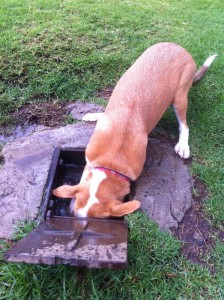

Helloes.
Despite my lack of blogifying here, Roxy has continued to grow!
She’s five months old now, so mostly fully grown.
Squeak!
Busy times recently with visitors from overseas and work being mentalcrazybusy.
Class of Puppies
We graduated from the puppy class (got a certificate and everything. It lives on the fridge. Can’t wait until she starts bringing drawings home from school!*) and will definitely be joining an intermediate class in the new year. Lots of people are on holidays and things over December, so running classes go a bit quiet because of likely low attendance.
Not sure yet if we’ll go back to the same place. The beginner class was good, and the location and time (Newlands, Saturday afternoon) are very convenient. I think my only bad comment about the classes is that there was a little too much downtime / playtime compared to learning stuff time. I think I would have preferred more, shorter, breaks and more focused learning bits. But, perhaps that’s more appropriate for the next class – we shall see! It was great for socialisation and doing “tricks” in “challenging” “situations.”
The Dog Park
We have a fairly regular morning routine now: off to The Dog Park after coffee (and training (which continues, btw, at breakfast and dinner)) for some running around and playing with other doggies.
There’s a pretty solid group that we see every day or so – one dog and his owner in particular seem to match our timeslot well: Rose and her dog Jack.
Jack is very similar in look and heritage (i.e. mushed) to Roxy, and they get on very well and run around like two mad things being mad.
There’s a water spot in The Dog Park (that looks like a municipality water access point) that has a tap in so that folk can fill it up.
Roxy has learned from two Jack Russells that we often see in the park the tricks of: 1 – spitting the ball into the pool; 2 – diving into it head (and legs) first.
Exhibits A and B below: evidence and aftermath. [Click to MoreBigIfy]

“Cute!”
Roxy is still making us even more walky than we were before. I like naytcha.
Most Saturday mornings we go off to Newlands for walkies, sometimes off to further afield.
It’s very pleasing that we still get lots of people saying nice things about Roxy: how pretty and good-natured she is.
I like to think that at least some of this is due to us :).
Tricksy, Precious
We’re about to dig out the books and start looking for new stuff to teach her, but latest greatest hits are:
- Jump (straight up in the air, not onto a human)
- Bark (very exciting, apparently)
- Hop (on to tree stumps and rocks when out and about. She may have a complex about being short ;] )
- Fetch (loves it. Runs like a mad thing)
General Comments
*salute*
She’s still pretty well behaved.
House training seems to have caught on and stuck, even when’s left in the bedroom and not inside her kennel. Next step for later is to let her have the whole house. For now, for our stuff’s safety and the cats’ sanity, she stay in our room.
She comes when called, even when in the park or the forest.
She does respond to commands from other people, even… children.
She’s still a little bit of a handful in some social situations.
She’s still young, so she’s a bit unpredictable.
Went to a braai out at Hendrick’s the other day, and Roxy decided that barking at kids was Where It’s At.
Cue much throwing of ball as distraction.
That’s all for now.
Be excellent to each other.
______________________________
* – This is a joke.

{kind=link}
{kind=link}
{kind=link}
{kind=link}